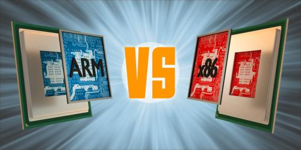

Infra
Private & Secure
Technische Infrastructuur
Private & Secure
Technische Infrastructuur

Om een veilige en privacy bestendige desktop te verkrijgen kan een bestaande computer worden heringericht. Bijvoorbeeld om naast bestaande operating systeem (OS) zoals Windows10 een 2e Linux OS in de vorm van dual boot te installeren. Of, ingeval van oudere computer met Windows 7 of Vista om deze geheel schoon te poetsen en daar voor in de plaats Linux te installeren. Als er géén bestaande of verouderde computer is, of ter aanvulling op bestaande situatie kan een DIY nieuwe veilige en privacy bestendige en AVG compliant desktop worden gemaakt.
De Portable Solid State Drive (SSD) T7 Touch op basis van de USB 3.2 Gen 2 standaard met een extra hardware beveiligingsmaatregel in de vorm van een ingebouwde vingerafdruksensor en daarbij de AES 256-bit hardware-encryptie dus AVG compliant. De T7 Touch is verkrijgbaar in het zwart of zilver in 500 GB, 1 TB en 2 TB, met USB Type-C-naar-C-kabel en een USB Type-C-naar-A-kabel en compatibel vanaf Windows 7, macOS vanaf 10.10 en Android vanaf 5.1 (Lollipop).

Zoals uit onderstaande review blijkt zijn er uit een test van reeks van micro SD cards, twee als beste naar voren gekomen. Wat betreft read speed zijn alle cards "in de top" ongeveer gelijk. Echt verschil zit in de write speed en levensduur ingeval van veel writes. Want SD Cards slijten verhoudingsgewijs snel in vergelijking tot SSD:
. Micro SD Card Lexar High Performance voor veel en zeer snelle data write (overall top - koop advies).
. Micro SD Card SanDisk High Endurance voor veel en langdurige writes tbv video opname zoals dash cam.
Next best
. Micro SD Card SanDisk Extreme Pro voor (marginaal) snelste read, maar echt minder snelle write speed dan Lexar High Performance.

De processor architectuur is van belang om te bepalen welke versie van operatings systeem (OS) kan worden gebruikt, namelijk de x86 architectuur of ARM. Fabrikanten Intel en AMD zijn een van de meest toegepaste processors met x86 architectuur.
→ zie: Wikipedia x86
ARM architectuur met System on a Chip (SoC) waarbij componenten zoals processor, GPU, WiFi- BT modem, memory etc als één geheel in de processor kunnen zijn opgenomen, wordt meestal gebruikt in mobiele apparaten zoals Android en Apple iOS, iPadOS etc vanwege lage energieverbuik. En omdat mondiaal de trend is naar mobiel en IoT, groeit daarbij ook gebruik van ARM. Fabrikanten van mobiele processoren zoals Samsung, TSMC, Rockchip, NXP, ATi, Qualcomm, Broadcom, Nividia, Allwinner, Texas Instruments etc. hebben een licentie op ARM architectuur.
→ zie: Wikipedia ARM
Linux kent een reeks ARM distro's, bijvoorbeeld voor Single Board Computers (SBC) Raspberry Pi, Arduino, LattePanda. En Linux phones zoals System76, Purisme en Pine. En ook op traditionele form factor laptop en desktop met oa ChromiumOS. Sinds 2018 is er ook een stripdown versie van Windows10 genaamd "Windows on ARM (WOA)". ARM versie voor macOS is in ontwikkeling.
De verschillen tussen de twee architecturen zijn groot, waarbij x86 Intel I7 U-serie mobiele processor 45 Watt Thermal Design Power (TDP) consumeert, verbruikt de ARM 3 Watt TDP. Niet alleen gaat een batterij op ARM dus veel langer mee, ook hitte (weerstand verhogend en snelheid vertragend) dat gepaard gaat met stroomverbuik, is met ARM veel lager met dus in principe geen bijzondere koel voorzieningen.
 Zie deze website back ground foto: vloeistof gekoelde PC's komen voor bij high performance x86 processor zoals AMD Ryzen Threadripper 3990X met 64 cores en een TDP van 280 Watt - kost $2000 in 2019. Bedrijfstemperatuur is kamertemperatuur plus 10C.
Zie deze website back ground foto: vloeistof gekoelde PC's komen voor bij high performance x86 processor zoals AMD Ryzen Threadripper 3990X met 64 cores en een TDP van 280 Watt - kost $2000 in 2019. Bedrijfstemperatuur is kamertemperatuur plus 10C.
Het hiervoor vermelde verklaart waarom laptops zoals MacBook's draaiende met x86 architectuur in een super small high tech design form factor meestal worstelen met koeling; bij ~100C gaat de processor klokfrequentie via embedded software naar beneden, want maximale tolerantie bereikt. Dat thermal throttling is nodig want hoge temperaturen verlagen levenduur van processor aanzienlijk.
→ In 2020 kondigde bedrijf Apple Sillicon aan: is ARM architectuur
Beide architecturen (x86 en ARM) kennen 32bit en 64bit processor varianten. Alhoewel de 64bit variant al meer dan 10 jaar wordt geproduceerd zijn er anno heden nog 32 bit OS'n want er is nog veel software waaronder véle klassieke games die destijds voor 32bit OS zijn geprogrammeerd.
64bit Apps zijn meestal downwards compatibel met 32bit OS, maar dan met gevolg lagere performance; 32bit Apps zijn niet upwards 64bit OS compatibel. De gemiddelde non gaming gebruiker heeft een 64bit processor, gebruikt dan een 64bit OS. En voor de duidelijkheid: Apps benaderen via het OS de hardware, en elk OS dat weer anders doet, dus moet een App "per OS" geschikt gemaakt worden om te functioneren, zie DevOps Full Stack Developer.

IT infrastructuur is set van componenten die de basis vormen van een IT service. Typisch fysieke componenten zijn computer- en netwerk hardware en -faciliteiten, maar ook diverse software.
→ zie: Wikipedia IT infrastructuur
Volgens de Foundation Course Glossary van de Information Technology Infrastructure Library (ITIL), kan IT infrastructuur ook worden aangeduid als alle hardware, software, netwerken, faciliteiten etc. die nodig zijn om te ontwikkelen, testen, leveren, bewaken, controleren of ondersteuning van IT diensten. De term IT infrastructuur omvat niet de bemensing, processen en documentatie.
→ zie: Wikipedia ITIL
YouTube Videotorials Infra:
HDMI, DisplayPort, DVI, VGA, Thunderbolt
USB Ports, Cables, & Connectors
Network Connectors
Ethernet Cables, UTP vs STP, Straight vs Crossover, CAT 5,5e,6,7,8
Hub, Switch, & Router
Modem vs Router - What's the difference
Wireless Access Point vs Wi-Fi Router
Powerline Ethernet Networking
Tri-Band WiFi Router
2.4 GHz vs 5 GHz WiFi: What is the difference
What is a Hotspot
WiFi Range Extender - WiFi Booster explained - Which is the best
WiFi (Wireless) Password Security - WEP, WPA, WPA2, WPA3, WPS
DHCP - Dynamic Host Configuration Protocol
ARP - Address Resolution Protocol
NAT - Network Address Translation
Port Forwarding
Network Types: LAN, WAN, PAN, CAN, MAN, SAN, WLAN
Network Topologies Star, Bus, Ring, Mesh, Ad hoc, Infrastructure, & Wireless Mesh
What is a Firewall
What is a DMZ (Demilitarized Zone)
NAS vs SAN - Network Attached Storage vs Storage Area Network